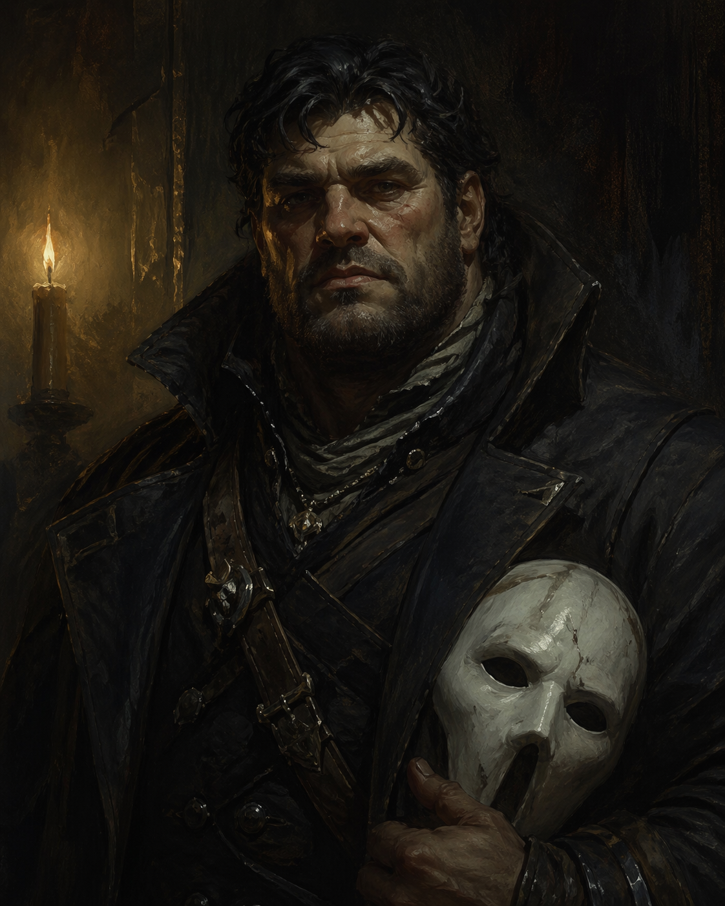

Harrow � Darv Karderra
Marked by Setarra. The question is whether a deal can ever truly be escaped.
Reference: The Ghost Field ?
Player: Sean
Story Abilities
- Known Rituals — You begin with two rituals already learned — no clock required. Choose any two from the Ghost Field rituals list that fit who Harrow is and where he’s been. They are already part of your practice.
- Ritual Research — Use a downtime action to study toward a new ritual. On a 4/5, start the learning clock at 4 out of 8 instead of 0. On a 6, start at 6 out of 8. Your background gives you a head start that other practitioners don’t have.
Background
- Full name: Darv Karderra
- Severosi descent � Underworld background
- Typically wears a gray cable-knit sweater and carries a messenger pouch
- Graduate of Charter Hall � possibly expelled from the College prior, allegedly for violence
- The most supernaturally sensitive member of the crew
- Cannot express emotions in a conventional way � watching others perform is how he processes feeling
- Has a foe relationship with Setarra � she is actively hunting him; he is marked
Vice � Pleasure
Harrow cannot express his own emotions � not naturally, not easily. The theatre gives him a channel: other people performing feelings he has no outlet for. He is not an audience member so much as a witness. Something about watching trained performers channel grief, joy, or rage onto a stage settles something in him that nothing else does.
The spectrology and language arts division. An institution, not a person � which suits him. He attends productions, lectures, and recitals without drawing attention. His name still carries enough weight from Charter Hall to get him a seat.
On his downtime date with Quellyn, Harrow went to the theatre wearing his Spirit mask. Jared was at the same performance and saw him. During the 6 Towers confrontation, Jared immediately recognized the mask and interrupted the tension to tell Harrow he was fantastic in the production. Harrow broke character: “Really? You think I was good?” Alaric had to snap him back to focus.
This is one of the few moments Harrow’s genuine emotional response surfaced without armor. The praise landed, and he felt it.
Friend & Foe
A witch. They have worked together before � and their relationship has been on-and-off in a way neither of them seems able to resolve cleanly. She understands what he is in a way most people don't, which makes her both valuable and complicated. The kind of person you call when things are genuinely wrong.
Current status (after Session 7 downtime): On again. Harrow spent a downtime action to advance the relationship clock � they are now officially dating. An “Off Again” clock has started in the background; the pattern holds.
She marked him. She is patient. She is not attacking directly � she is letting the obligation deepen. Every use of his power in occult spaces tightens her claim. She sees him as hers, already, just not yet retrieved.
What the Crew Has Heard
- Worked on a leviathan ship for many seasons.
- Graduated from Charter Hall.
- Was kicked out of the College � possibly for violence.
- Is wanted for crimes against the Emperor.
- Once owned a horse.
- Has a bastard child that he is unaware of.
- Worked the greenhouse.
Character Sheet
?????????
??????
| Level 1 | — | Marked |
| Level 2 | � | � |
| Level 3 | � | |
- Compel � You can Attune to the ghost field to force a nearby ghost to do something against its nature. Costs stress; the ghost resists.
| Hunt | ???? | Insight |
| Study | ???? | Insight |
| Survey | ???? | Insight |
| Wreck | ???? | Prowess |
| Attune | ???? | Resolve |
| Command | ???? | Resolve |
The Ash Compact — Harrow’s History
He was recruited as a Notary-level operative — not a true believer, a professional. The pitch was framed as a scholarly recovery operation: restoring a suppressed compact, recovering ghost-field knowledge the establishment had buried. Nobody mentioned Setarra. He was offered access to ritual theory he couldn’t get anywhere legitimate. He took it.
What he did: gathered ghost-field data, helped prepare ritual components, identified bloodline markers in city records. Skilled work. Nothing that felt obviously monstrous at the time. That’s how the Compact uses Notaries — they don’t need to know what the work is for.
He attended a working where a Petitioner completed their bargain. Watched someone he had worked alongside for weeks become wrong — dry skin, shadow that didn’t track right, voice that doubled slightly. Not dramatic. Quietly, permanently off. He started asking questions. Nobody answered them directly. That was enough.
He burned his contact points and stopped showing up. The Compact doesn’t always pursue low-level defectors — the cell fragmentation means they can’t always reconstruct what a Notary knew. But Setarra defers debts; she doesn’t forgive them.
The leverage: while inside the Compact, he flagged someone — identified a person as a bloodline match for something they were hunting. He passed the information up the chain and moved on. He doesn’t know what happened to that person afterward. The not-knowing is the leverage. Setarra has an outstanding claim on work he did that hasn’t resolved.
- Nell Vask — Worked under or alongside her. Knows her by face and name. She would recognize him — and not know whether he’s active or dormant.
- Pale Jeren — A dockside contact point for message handoffs. Jeren’s face would be familiar. Jeren would recognize him.
- The Handless Clerk — Has received messages from him. Knows him only as a courier — nothing beyond the role.
- Palm-Mother Edda — Knows her shrines and was trained to recognize and avoid disturbing them. May have seen her in person.
- Veleris Quill — Does not know her. May have heard the name once, as someone above his level. Would not recognize her on sight.
The Compact’s signals — phrases, hand configurations, ash marks — still register with Harrow instinctively when he encounters them. He may recognize Compact activity before anyone else does. Conversely, Nell Vask or Pale Jeren encountering him creates a live question: does he report in? Does he run? Is there still a debt outstanding?
Setarra sees him as a dormant asset with an unresolved obligation, not as a threat. That assessment may be the most dangerous thing about his situation.
Setarra's Interest
Setarra leaves traces specifically for Harrow � dust, handprints, dreams. She's not directly attacking him yet. She's patient. She's letting the obligation deepen. The Failed Cultist on the ghost train recognized his mark instantly: "She sent you. She always sends another one."
Ticks each time Harrow uses attunement in occult spaces. The crew doesn't see this clock. When it fills, Setarra's claim on him escalates.
Arc
Obligation. Being claimed. The slow erosion of self that comes with a debt you can't repay � and the fight to escape it anyway.
Connections
- Quellyn � friend and on-off; the person who understands what he is; complicated history
- Setarra � foe; has marked him; patient and inevitable
- The Ash Compact � Setarra's cult will recognize his mark and treat him as a potential asset or problem
- The Ghost Train � the train's resistance to Setarra made his attunement particularly volatile aboard it
Moments to Create
- The Warden in the Sunken Temple will name his mark � and ask what he's willing to bind in exchange for passage
- Quellyn surfacing at a bad time � or exactly the right time
- Dreams where Setarra's influence becomes harder to distinguish from his own thoughts
- A moment where he must choose between using his power and letting the obligation deepen
- Someone finding out about the bastard child before he does